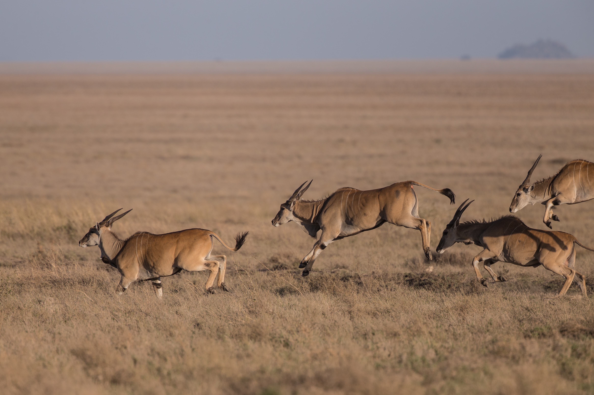
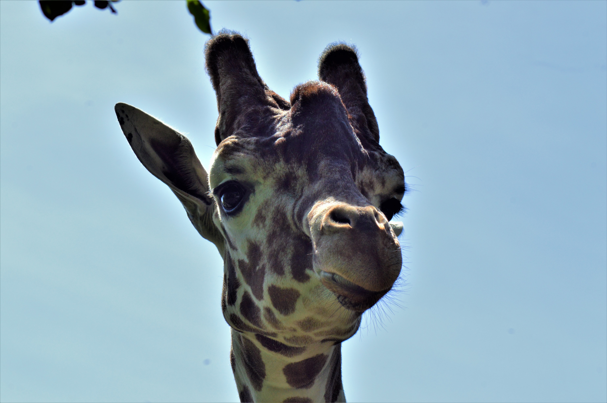

Monkey
Animal found in Kenya a small to medium-sized primate that typically has a long tail, most kinds of which live in trees in tropical countries

Lioness
Animal found in Kenya a female lion
African Leopard
Animal found in Kenya a large solitary cat that has a fawn or brown coat with black spots, native to the forests of Africa and southern Asia

Common Eland
Animal found in Kenya a large spiral-horned African antelope which lives in open woodland and grassland.

Northern Giraffe
Animal found in Kenya a large African mammal with a very long neck and forelegs, having a coat patterned with brown patches separated by lighter lines. It is the tallest living animal.